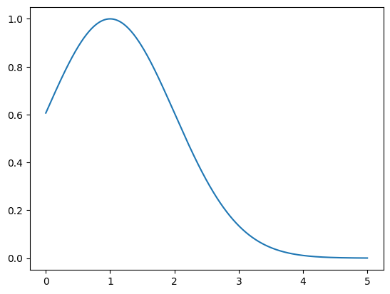
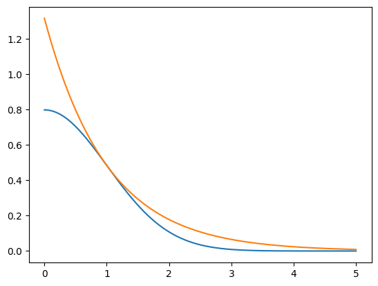
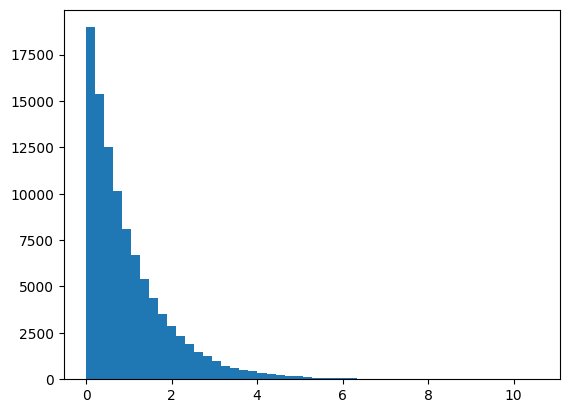
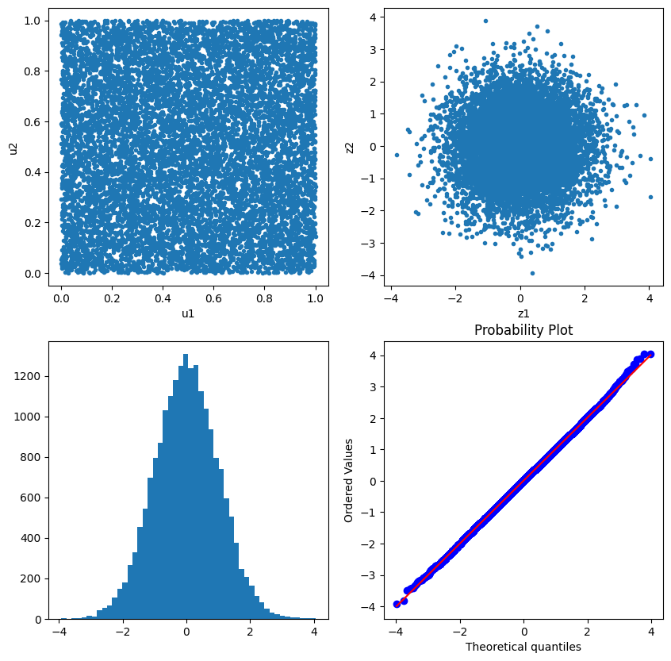
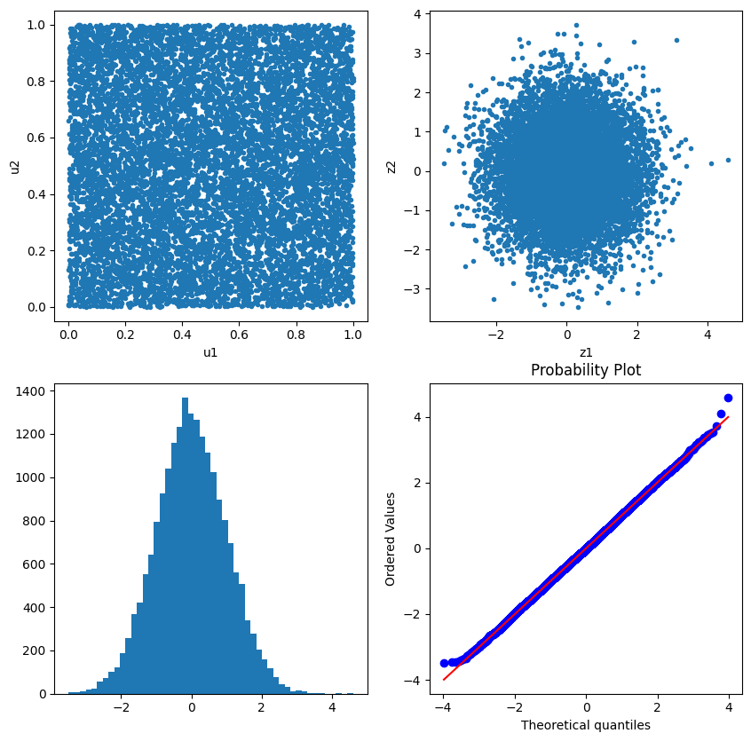
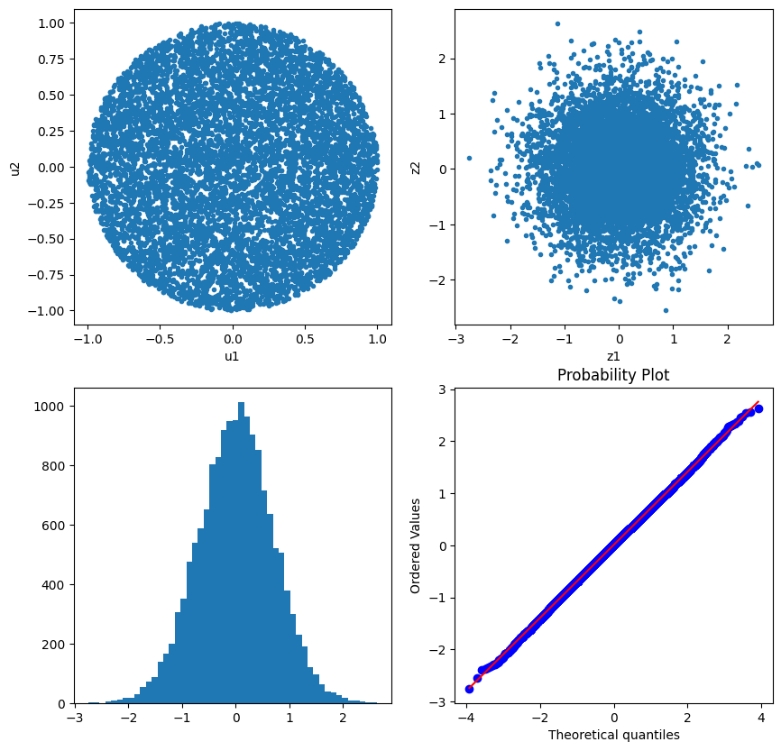

import numpy as np import pandas as pd import matplotlib.pyplot as plt import scipy.stats as stats f = lambda x: 2/np.sqrt(2*np.pi)*np.exp(-x**2/2) g = lambda x: np.exp(-x) Ginv = lambda x: -np.log(1-x) x = np.linspace(0,5,501) c = np.sqrt(2/np.pi)*np.exp(0.5) #c = 1 plt.plot(x,f(x)/(c*g(x))) plt.show()

plt.plot(x,f(x)) plt.plot(x,c*g(x)) plt.show()
#random sampling from Exponential dist. n = 100000 e = np.random.rand(n) x = Ginv(e) plt.hist(x, bins=50) plt.show()

#acceptance-rejection u = np.random.rand(n) idx = u < (f(x) / (c*g(x))) y = x[idx] #signx s = np.random.rand(len(y)) sign = (+1)*(s>0.5) + (-1)*(s<=0.5) z = y * sign fig, ax = plt.subplots(2,1,figsize=(5,10)) ax[0].hist(z, bins=50) stats.probplot(z, dist="norm", plot=ax[1]) plt.show()

# accept된 갯수, 통계량 z = pd.Series(z) print("Size = ", len(z)) print("Mean = ", z.mean()) print("Std = ", z.std()) print("Skewness = ", z.skew()) print("Kurtosis = ", z.kurt())
Size = 76242 Mean = 0.004399928352169691 Std = 0.9994359934475461 Skewness = -0.0035700194262359955 Kurtosis = -0.020022846863712473
import numpy as np import pandas as pd import matplotlib.pyplot as plt import scipy.stats as stats u1 = np.random.rand(10000) u2 = np.random.rand(10000) z1 = np.sqrt(-2*np.log(u1))*np.cos(2*np.pi*u2) z2 = np.sqrt(-2*np.log(u1))*np.sin(2*np.pi*u2) fig, ax = plt.subplots(2,2,figsize=(10,10)) ax[0,0].plot(u1,u2,'.') ax[0,0].set_xlabel("u1") ax[0,0].set_ylabel("u2") ax[0,1].plot(z1,z2,'.') ax[0,1].set_xlabel("z1") ax[0,1].set_ylabel("z2") z = np.concatenate([z1,z2]) ax[1,0].hist(z, bins=50) stats.probplot(z, dist="norm", plot=ax[1,1]) z = pd.Series(z) print("Mean = ", z.mean()) print("Std = ", z.std()) print("Skewness = ", z.skew()) print("Kurtosis = ", z.kurt())
Mean = 0.005319050470821333 Std = 1.0041333833693569 Skewness = 0.007870653875667408 Kurtosis = 0.026864384771177363

import numpy as np import pandas as pd import matplotlib.pyplot as plt import scipy.stats as stats u1 = np.random.rand(1000) # u1 = np.array(np.repeat(0.2,1000)) u2 = np.random.rand(1000) # u2 = np.repeat(0.3,1000) z1 = np.sqrt(-2*np.log(u1))*np.cos(2*np.pi*u2) z2 = np.sqrt(-2*np.log(u1))*np.sin(2*np.pi*u2) fig, ax = plt.subplots(2,2,figsize=(10,10)) ax[0,0].plot(u1,u2,'.') ax[0,0].set_xlabel("u1") ax[0,0].set_ylabel("u2") ax[0,1].plot(z1,z2,'.') ax[0,1].set_xlabel("z1") ax[0,1].set_ylabel("z2") z = np.concatenate([z1,z2]) ax[1,0].hist(z, bins=50) stats.probplot(z, dist="norm", plot=ax[1,1])
((array([-3.39232293, -3.14126578, -3.00201262, ..., 3.00201262, 3.14126578, 3.39232293]), array([-3.08879653, -2.96225972, -2.93767351, ..., 2.89101449, 2.92098679, 3.03513649])), (0.9735473709334279, 0.01518582487043528, 0.9993181942933621))

z = pd.Series(z) print("Mean = ", z.mean()) print("Std = ", z.std()) print("Skewness = ", z.skew()) print("Kurtosis = ", z.kurt())
Mean = 0.015185824870435093 Std = 0.9729848649387326 Skewness = 0.026318252305075517 Kurtosis = 0.10017595589855377
import numpy as np import pandas as pd import matplotlib.pyplot as plt import scipy.stats as stats u1 = 2*np.random.rand(10000) - 1 u2 = 2*np.random.rand(10000) - 1 idx = u1**2+u2**2<1 u1 = u1[idx] u2 = u2[idx] r = np.sqrt(u1**2 + u2**2) z1 = u1*np.sqrt(-2*np.log(r)/(r**2)) z2 = u2*np.sqrt(-2*np.log(r)/(r**2)) fig, ax = plt.subplots(2,2,figsize=(10,10)) ax[0,0].plot(u1,u2,'.') ax[0,0].set_xlabel("u1") ax[0,0].set_ylabel("u2") ax[0,1].plot(z1,z2,'.') ax[0,1].set_xlabel("z1") ax[0,1].set_ylabel("z2") z = np.concatenate([z1,z2]) ax[1,0].hist(z, bins=50) stats.probplot(z, dist="norm", plot=ax[1,1])
((array([-3.92200263, -3.70288844, -3.58286194, ..., 3.58286194, 3.70288844, 3.92200263]), array([-2.75062726, -2.54667074, -2.3831233 , ..., 2.54073674, 2.5642353 , 2.63545236])), (0.7004291238850505, 0.009082295652274254, 0.9999096754512135))

# 표준편차 이상함 z = pd.Series(z) print("Mean = ", z.mean()) print("Std = ", z.std()) print("Skewness = ", z.skew()) print("Kurtosis = ", z.kurt())
Mean = 0.005214667686108389 Std = 0.7034156408834322 Skewness = -0.010790249902950888 Kurtosis = -0.022110372173252735
import numpy as np import pandas as pd import matplotlib.pyplot as plt corr = np.array([[1,0.3,0.5],[0.3,1,0.6],[0.5,0.6,1]]) pos_def = np.all(np.linalg.eigvals(corr) > 0) print(corr) print(pos_def) #%% #Cholesky Decomposition c = np.linalg.cholesky(corr) x = np.random.randn(10000,3) y = x @ c.T y = pd.DataFrame(y, columns=['z1','z2','z3']) print("Mean") print(y.apply(['mean','std'])) print() print("Correlation") print(y.corr())
[[1. 0.3 0.5] [0.3 1. 0.6] [0.5 0.6 1. ]] True Mean z1 z2 z3 mean 0.005413 0.014955 0.002848 std 0.994726 0.999791 0.999323 Correlation z1 z2 z3 z1 1.000000 0.293904 0.482619 z2 0.293904 1.000000 0.601780 z3 0.482619 0.601780 1.000000
#Positive Definite 하지 않은 상관계수 행렬 생성 pos_def = True while pos_def: x = np.random.randn(1000, 2) x = np.concatenate([x[:,0:1], x[:,0:1]+x[:,1:2], x[:,0:1]-2*x[:,1:2]], axis=1) corr = pd.DataFrame(x).corr() pos_def = np.all(np.linalg.eigvals(corr) > 0) print(corr) print(pos_def)
0 1 2 0 1.000000 0.716544 0.460920 1 0.716544 1.000000 -0.288758 2 0.460920 -0.288758 1.000000 False
#cholesky: error #c = np.linalg.cholesky(corr) #Eigenvalue Decomposition values, vectors = np.linalg.eig(corr) values = np.maximum(0, values) B = vectors @ np.diag(np.sqrt(values)) print(B) print() print(B @ B.T) print()
[[ 0. 0.98180222 0.18990632] [ 0. 0.83597193 -0.54877221] [ 0. 0.28400185 0.95882373]] [[ 1. 0.71654378 0.46092033] [ 0.71654378 1. -0.28875824] [ 0.46092033 -0.28875824 1. ]]
z = np.random.randn(10000,3) y = z @ B.T y = pd.DataFrame(y, columns=['z1','z2','z3']) print("Mean") print(y.apply(['mean','std'])) print() print("Correlation") print(y.corr())
Mean z1 z2 z3 mean 0.011488 0.003370 0.011480 std 1.001032 1.010722 0.994734 Correlation z1 z2 z3 z1 1.000000 0.722161 0.447696 z2 0.722161 1.000000 -0.295222 z3 0.447696 -0.295222 1.000000
#Singular value decomposition print("=== original data ===") print(pd.DataFrame(x).apply(['mean','std'])) print(pd.DataFrame(x).corr()) print() U, S, Vh = np.linalg.svd(x) np.allclose(U[:,:3] @ np.diag(S) @ Vh, x) B = Vh.T @ np.diag(S) / np.sqrt(len(x)) z = np.random.randn(10000,3) y = z @ B.T print("=== simulation data ===") y = pd.DataFrame(y, columns=['z1','z2','z3']) print("Mean") print(y.apply(['mean','std'])) print() print("Correlation") print(y.corr())
=== original data === 0 1 2 mean -0.031273 -0.024253 -0.045312 std 1.025723 1.426155 2.241957 0 1 2 0 1.000000 0.716544 0.460920 1 0.716544 1.000000 -0.288758 2 0.460920 -0.288758 1.000000 === simulation data === Mean z1 z2 z3 mean -0.006377 -0.013568 0.008004 std 1.027312 1.432960 2.227500 Correlation z1 z2 z3 z1 1.000000 0.721764 0.454958 z2 0.721764 1.000000 -0.287987 z3 0.454958 -0.287987 1.000000